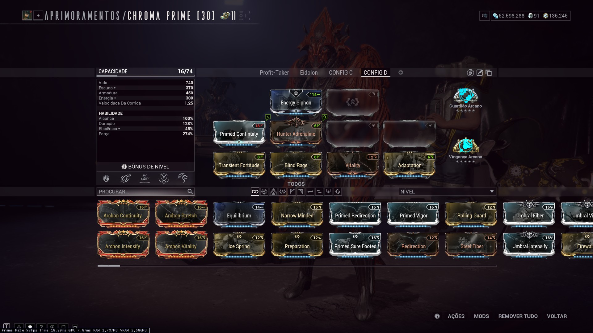
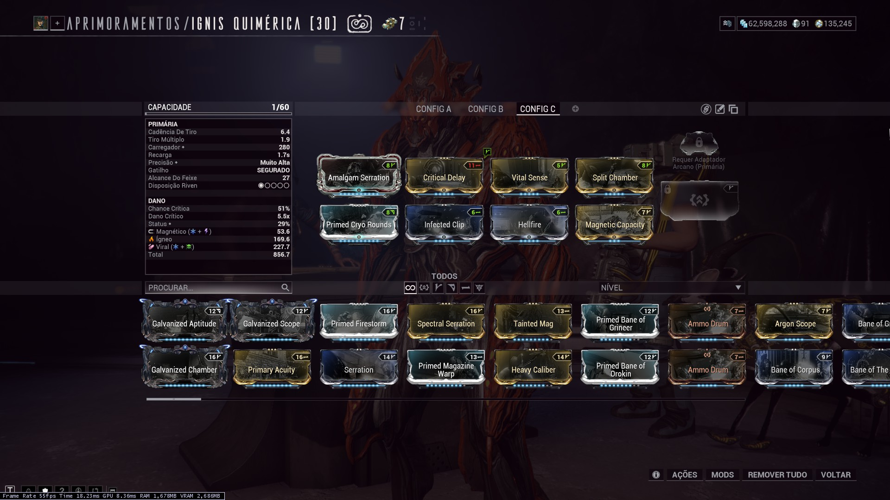
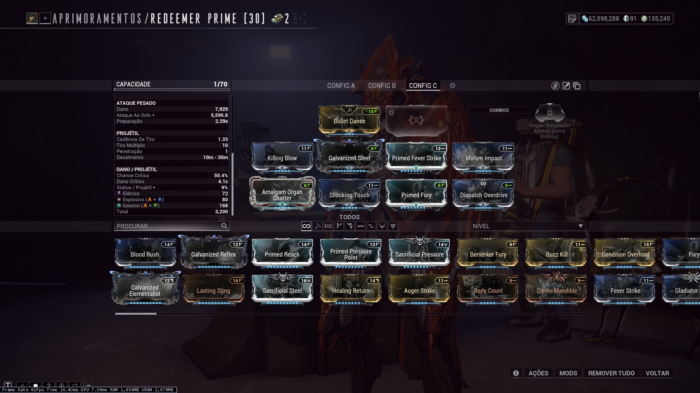

Modo Iniciante
Uma recomendação de setup simplificada para quem está começando a caçar o Beneficiária.
O objetivo desta configuração não é realizar a luta no menor tempo possível. A prioridade é possuir dano suficiente para completar todas as fases sem depender de uma configuração extremamente especializada, ao mesmo tempo que tenha o conforto de um Warframe mais resistente.
Warframe
Chroma é a recomendação para quem deseja aprender a Beneficiária enquanto já utiliza uma configuração que continuará sendo útil para farm de Créditos. Caso Chroma não esteja disponível, Rhino/Prime é uma excelente alternativa, também oferecendo amplificação de dano e resistências, deixando de lado apenas o buff de créditos

Armas
Não existe uma combinação única obrigatória. O objetivo é distribuir os diferentes tipos de dano entre suas armas. Não é necessário cobrir todos os tipos elementais. Quando aparecer um tipo que não está no loadout, utilize o Operador para forçar a troca. Para este guia iniciante, estas foram as armas e builds utilizadas.



Com este setup, os elementos cobertos são: Magnético, Ígneo, Viral, Perfurante, Cortante, Corrosivo, Colisivo, Radioativo, Glacial, Elétrico, Explosivo e Gasoso, mas como é possível ver no vídeo de exemplo, muitos dos elementos cobertos tem dano baixo, tal que eu opto por forçar a mudança de elemento mesmo tendo uma arma disponível, a fim de minimizar o tempo da caçada.
Exemplo de caçada
O vídeo a seguir é um exemplo de caçada utilizando a configuração recomendada neste guia. Com o mínimo de investimento, este loadout foi capaz de completar a caçada em aproximadamente 8 minutos.